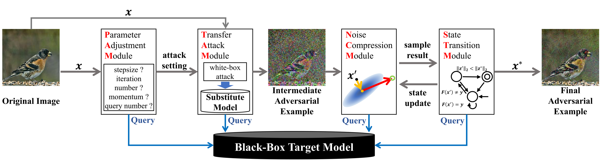
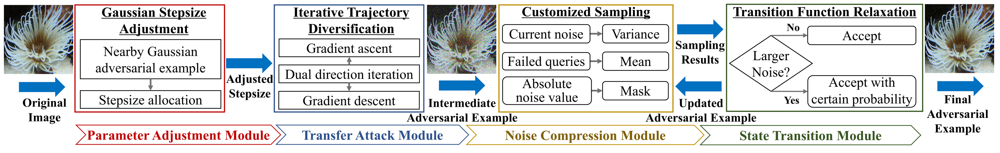

Query-efficient Black-box Adversarial Attack with Customized Iteration and Sampling
IEEE Transactions on Pattern Analysis and Machine Intelligence (TPAMI), Accepted, DOI:10.1109/TPAMI.2022.3169802
Yucheng Shi1, Yahong Han1, Qinghua Hu1, Yi Yang2, Qi Tian3
1. College of Intelligence and Computing, and Tianjin Key Lab of Machine Learning, Tianjin University
2. College of Computer Science and Technology, Zhejiang University
3. Cloud & AI, Huawei Technologies
Abstract
---It is a challenging task to fool an image classifier based on deep neural networks (DNNs) under the black-box setting where the target model can only be queried. The attacker needs to generate imperceptible adversarial examples with the smallest noise magnitude under a limited number of queries. However, among existing black-box attacks, transfer-based methods tend to overfit the substitute model on parameter settings and iterative trajectories. Decision-based methods have low query efficiency due to fixed sampling and greedy search strategy. To alleviate the above problems, we present a new framework for query-efficient black-box adversarial attack by bridging transfer-based and decision-based attacks. We reveal the relationship between current noise and variance of sampling, the monotonicity of noise compression in decision-based attack, as well as the influence of transition function on the convergence of decision-based attack. Guided by the new framework and theoretical analysis, we propose a black-box adversarial attack named Customized Iteration and Sampling Attack (CISA). CISA estimates the distance from nearby decision boundary to set the stepsize, and uses a dual-direction iterative trajectory to find the intermediate adversarial example. Based on the intermediate adversarial example, CISA conducts customized sampling according to the noise sensitivity of each pixel to further compress noise, and relaxes the state transition function to achieve higher query efficiency. We embed and benchmark existing adversarial attack methods under the new framework. Extensive experiments on several image classification datasets demonstrate CISA's advantage in query efficiency of black-box adversarial attacks. |
New Black-box Adversarial Attack Framework
---
Fig. 1: The overview of our black-box adversarial attack framework. The attacker firstly uses PAM to adaptively set attack parameters to improve the query efficiency for transfer-based attacks. TAM generates intermediate adversarial examples on the substitute model according to parameters set by PAM. NCM takes the intermediate examples generated by transfer-based attack as the starting point for sampling, and uses the remaining number of queries with the assistance of STM to compress the magnitude of adversarial noise.
Customized Iteration and Sampling Attack
---
Fig. 2: The pipeline of CISA under the new black-box adversarial attack framework. CISA optimizes the parameter setting, the initialization of adversarial examples, the noise compression and the transition function according to PAM, TAM, NCM and STM, respectively.